Post links · 4/8
零基础搭建全自动化Agent团队，Grok Bot从开通到多AI协作全流程【万字长文】
@xilo2991 · xilo · Mon Oct 12 11:53:32 +0000 2026
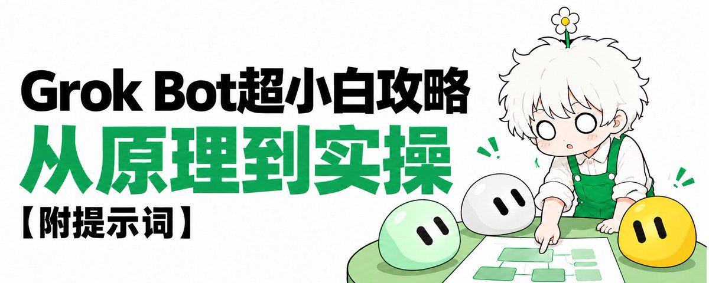
马斯克前几天在 X 上发了一条关于 Grok Bot (xAI's AI assistant that comes with its own computer) 的推文，说以后 SpaceX 会给不同任务调用合适的后端模型，Claude Opus 5.5、MidJourney、Suno 都在里面，哪个最可能给你最好的结果，就用哪个。
这样的话，那 Grok Bot 的可玩性就高了很多。
Embedded post: x.com/i/status/2107724314451878104
Hi朋友们，好久不见。
最近这个星期，我玩Grok Bot其实会玩得比较多。像我这两天推特发的爆款采集、需求洞察这些数据，实际上都是Grok Bot帮我做的。
Embedded post: x.com/i/status/2108423525275222131
用完Grok Bot，我一个很直观的感受就是：
如果你想搭建24小时自动化工作流 (workflow (a chain of steps done in order))，目前Grok Bot应该是最合适的选择。
如果你还没装过 Grok Bot，或者装了以后，不知道怎么把它用到实际的生产场景里，这篇可以当成你的入门指南。
我会尽量讲得直白一些，从开通到实际应用的整个过程都会梳理一遍。如果哪里不理解，也可以直接问我。
当然，因为我玩的时间比较短，如果有一些错误或遗漏的地方，也欢迎朋友们指出。
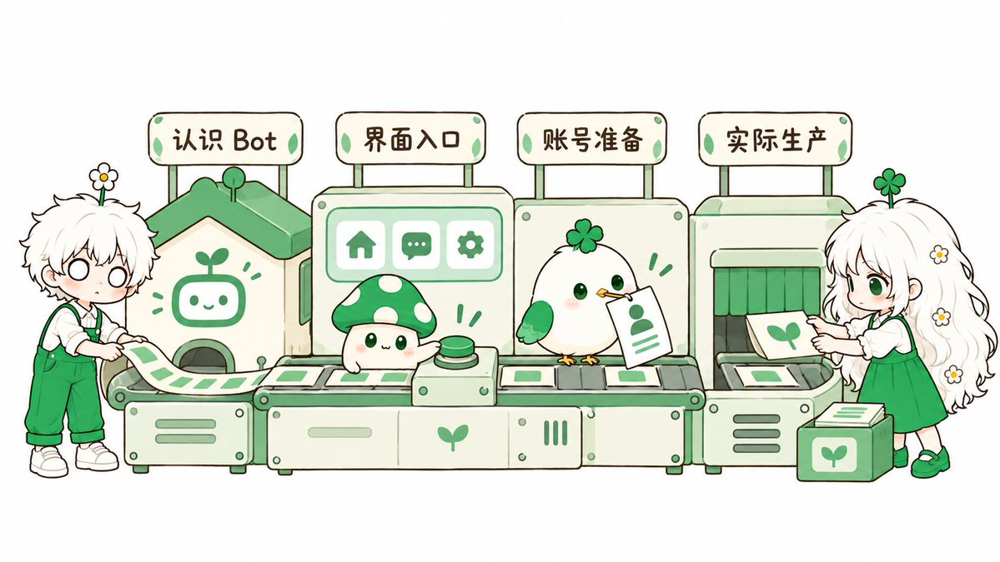
01. Grok Bot 是什么
Grok Bot 是马斯克旗下的 SpaceXAI 出的一款 AI Agent (an AI that takes steps on its own to finish a task) 产品，2026 年 8 月 12 日发布。
（Bot就是机器人的简称，你直接把它理解成AI助理就行。）
Embedded post: x.com/i/status/2087224798078517251
它一开始其实是 SpaceXAI 内部用的一个原型。官方的说法是，公司里销售、市场、运营、工程这些团队，都会创建很多 Bot 去干活，在内部用开了以后，才对外开放出来。
官方给它的定位，是一支 24 小时在线的 Agent 团队，主要的亮点在于：
第一，它有自己的电脑。 Bot 都在云上的一台电脑里干活，能登录你平时用的网站和工具，就算是没有 API (a way for programs to talk to each other)、接不了 MCP (Model Context Protocol, a standard way to plug apps into an AI) 的平台，它也能模拟人类操作。
第二，用起来像给同事发消息。 不用搭建复杂工作流，在手机或者电脑上给 Bot 发消息，就可以安排任务，跟进执行。
第三，可以创建多个不同Bot。 在Grok Bot里面，你可以同时创建很多个Bot。让它们各自负责一部分工作，它们之间会自己传递消息、协作安排工作，你不用在中间来回转述。
第四，越用越懂你。 你只要让Grok Bot执行一遍任务，它就能记下流程，打包成例行任务，然后下次自己执行。你用得越多、越久，Bot就越清楚你是如何工作的。
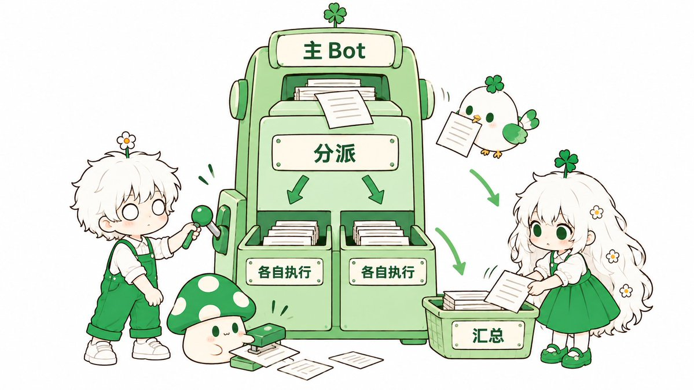
按我自己的理解，你可以把 Grok Bot 当成一家虚拟公司来看。
Grok Bot 里有一个主 Bot，就是头像边上带星标的。
主 Bot 就相当于这家公司的管理人员，他既可以自己干活，也可以安排其他的 Bot 去干活。（右键主Bot头像，可以切换任意Bot作为主Bot）
主 Bot 以外的其他 Bot，就是公司里的员工，每一个都有自己的名称、岗位和职责，也有自己的聊天记录和记忆 (memory (facts the bot keeps between chats))。
你需要有人去做什么事，就创建一个对应的Bot就行。
给Bot 安排任务有两种方式，你可以自己单独跟他交代，也可以交给主 Bot，让主 Bot 去安排。
比方说你跟主 Bot 说一句，让文案 Bot 写个脚本，创意 Bot 出几个封面想法。它就会分别发给这两个 Bot，等结果回来，再汇总给你。
另外，Grok Bot 还有一个建群聊的功能。
这就相当于把几个员工拉进同一个会议室，让他们自己去商量、开会。你就不用在几个聊天窗口之间来回复制粘贴了 （目前 Bot 在群里交接，只能传文字）。
02. Grok Bot 界面功能
Grok Bot 的界面，其实非常简洁。
不像Codex、Claude 有一大堆功能，基本上所有功能两只手就数得过来。但我反而觉得，少一点会更友好，这样上手难度会低很多。
整个界面就是左、中、右三个区域。
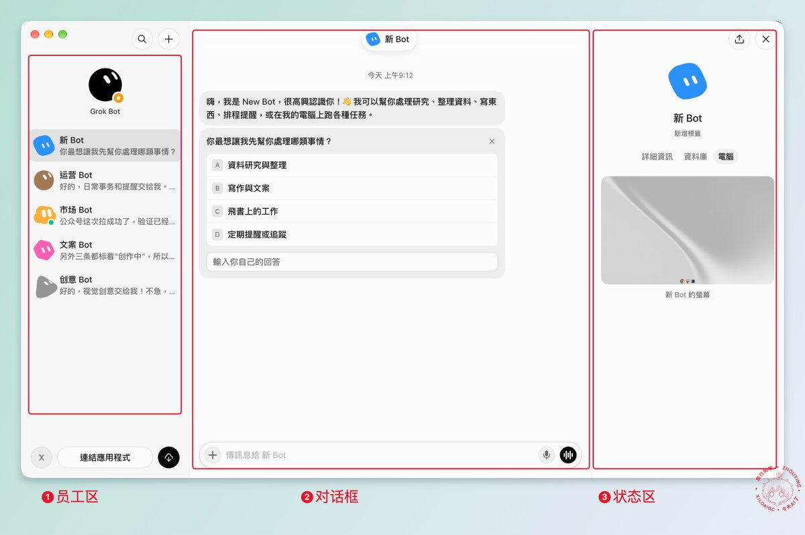
左边是员工区。
我们前面说的主 Bot 和 Bot 都在这个区域。你想跟哪个说话，选中哪个就可以了，跟平时聊微信是一样的。
中间是对话框。
你给 Bot 交代任务、看它的回复，都在这里。
右边是这个 Bot 的状态区，如果你的没有显示，那点一下Bot的头像就可以展开。
状态区分成了详情、资料库和电脑三个页签。
详情，就是Bot的工作。你给它设置的例行任务 （就是需要Bot重复执行的任务） 都会列在这里，开启和关闭都可以随时控制。
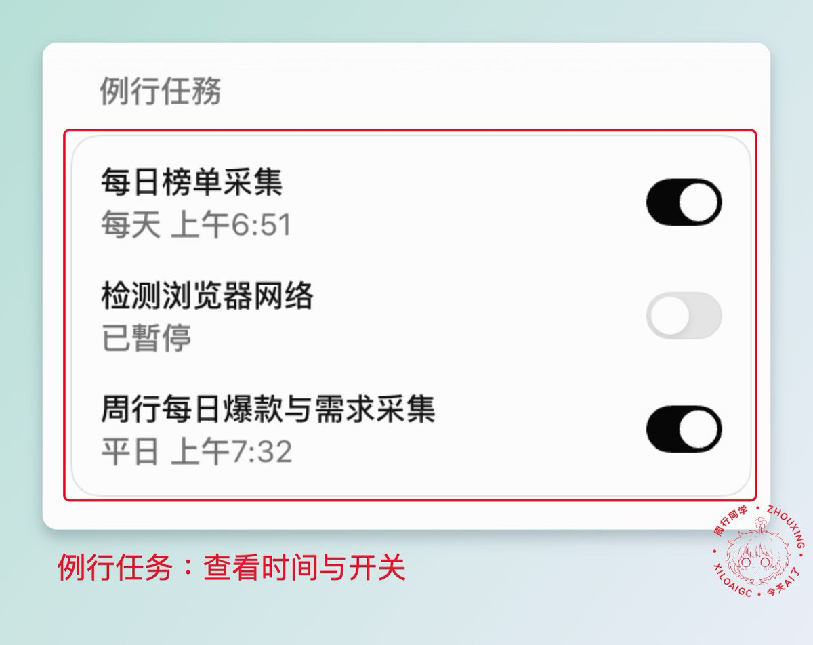
比方说我的市场 Bot，每天 6:51 会跑一次榜单采集，工作日 7:32 再跑一次爆款和需求采集。
非常直观。
既然说到了工作任务，那我们顺便说一下如何给Grok Bot安排任务。
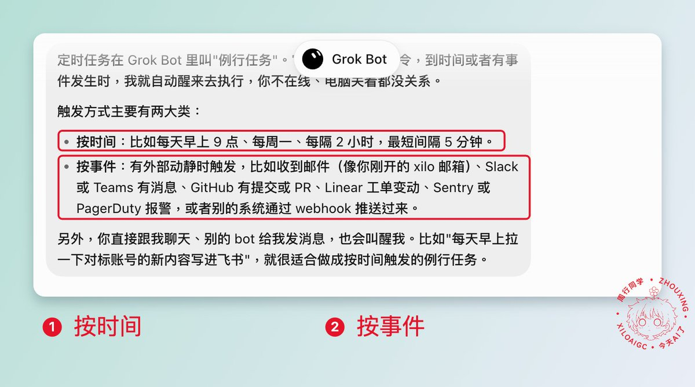
在Grok Bot里面，触发执行的方式大概有两种。
一是时间触发，就是到了特定时间，Grok Bot会去做特定的事情，就像我前面的爆款采集那样。
二是事件触发，就是达成什么条件后就会触发，例如你可以让Grok Bot连接你的邮箱、GitHub (a site for storing and sharing code)，然后让它收到特定邮件的时候通知你，或者GitHub有提交，PR、Linear 有工单变动，那么就可以触发Grok Bot去执行特定的任务。
另外，Grok Bot在之后的更新里还增加了一个WebHook触发，就是你可以连接其他工具，然后通过工具给WebHook发指令，就可以触发Grok Bot执行任务。
这个，其实也算是事件触发的一种。就比方说最近推特上比较好的Grok Bot接入微信，就是通过WebHook实现的。 （Kin老师和铁柱老师都有分享过）
OK，说回界面。
我们刚才说了详情，那就还有资料库和电脑。
资料库就是放产出的地方。这个 Bot 做出来发给你的页面、文件和链接，都会收在这里。
电脑，就是Grok Bot的图形化桌面。
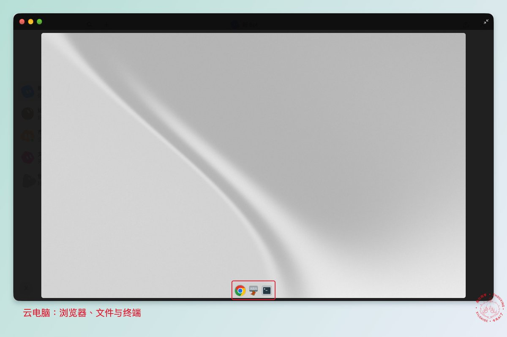
里面有浏览器、文件系统和命令终端。你也可以自己往里面装软件。 不过要注意哈，电脑更新或者重建以后，你安装的软件会被清掉。 （产出的文件和登录信息是会保留的）
大部分情况下，这台电脑是由Grok Bot来控制的，当然你也可以直接申请控制。
除此之外，Grok Bot值得说的，就只有左边栏下面的「连接应用」。
在这里，你可以给Grok Bot连接上各种外部应用，然后通过Grok Bot去操控这些应用。比方说连上Figma、Canva做设计，连上Notion (a notes and database app)就可以读取你的Notion知识库。
内置里没有的，你也可以自己连接。
比方说飞书，Grok Bot 里本来是没有的，但你告诉Grok Bot你想要连接飞书，它就会自己去找实现方案。
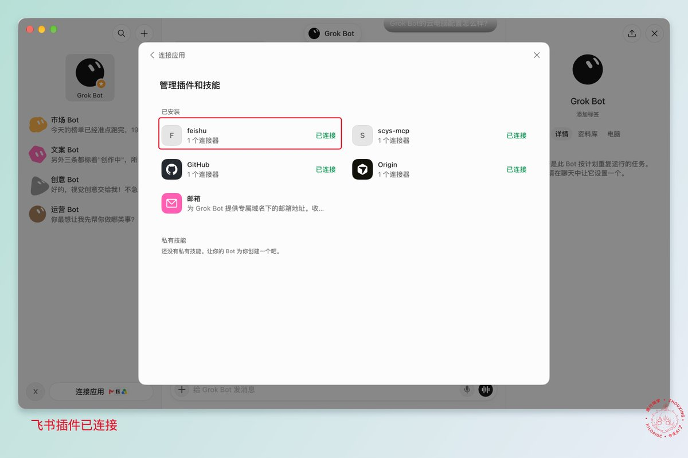
如果对方提供的是 MCP，那就更简单了，不用找设置入口，直接在聊天里把地址发给 Bot，让它帮你加上就行。
理论上来说，国内像 WorkBuddy 这些 Agent 里能接的应用，只要对方有 MCP、API 或者命令行这类对外的接口，你都可以试着接到 Grok Bot 里面去。
03. 怎么开通更划算
那 Grok Bot 要花多少钱呢？
Grok Bot 其实不单独卖。它是跟着 Cursor 和 Grok 的付费套餐一起送的，你手上有其中一个，就能直接使用 （登录和计费都走 Cursor 账号，因为今年 SpaceX 把 Cursor 也收购了）。
所以开通之前，先看看你手上有没有现成的会员。
情况一，你已经是 Cursor 的付费用户。
Pro、Pro+、Ultra，还有团队版的 Teams，都自带 Grok Bot，直接用 Cursor 账号登录就行。
情况二，你开的是 Grok 的会员。
SuperGrok (xAI's paid subscription plan)、SuperGrok Plus、SuperGrok Heavy 都可以用，登录以后把 Grok 账号关联上就好。
情况三，你开的是 X 的 Premium+。 （推特的订阅）
我的Grok Bot就是Premium+送的。Premium+ 包含 SuperGrok 和 Grok Bot，用这个 X 账号登录 Grok，再关联过来就行。
不过要注意的是，Grok 最便宜的 SuperGrok Lite，还有 Cursor 的免费版，都是用不了 Grok Bot 的。
如果你手上什么会员都没有，下面是我整理的官方定价，你可以评估下怎么订阅最划算。（10 月 11 日官网价格，单位美元。）
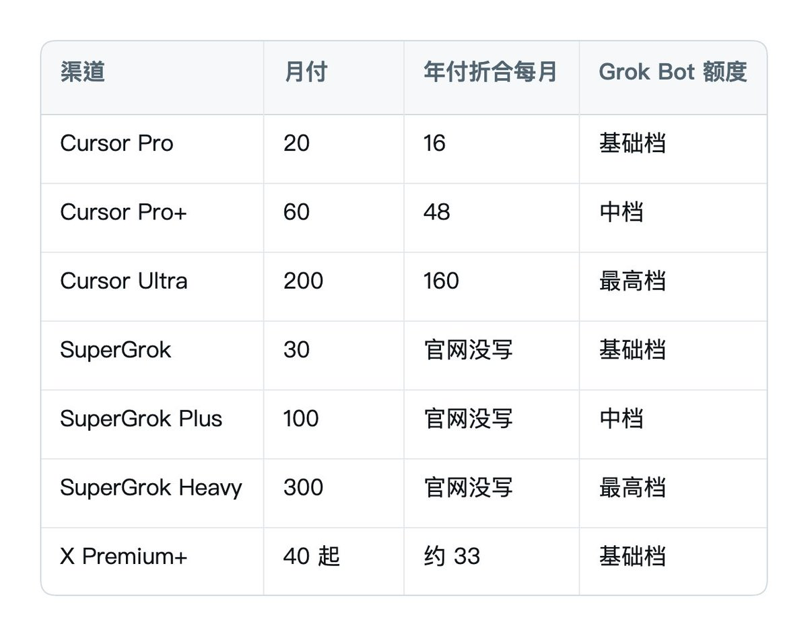
综合下来，如果你只是为了用Grok Bot，按照官方价格计算，门槛最低的是Cursor Pro。
但如果你还想要用更低的价格去用上Grok Bot，那可以试着找一下Grok或Premium+的第三方订阅渠道，价格会比官方相对便宜一些。
至于额度 (quota (how much use your plan allows))用量，官方没有公布Grok Bot每个档位具体能用多少，只给了档位说明，额度都是每周重置一次 。
但按照官方的说法，Bot 的用量是单独算的，不会占用你原来 Grok 或 Cursor 套餐的额度。
那么，我们就可以通过套娃，来提升Grok Bot的额度了。
比方说在Grok Bot的云电脑里安装Grok Build，让bot去调度Grok Build来执行任务，那你既省了Grok Bot的额度，又把Grok的额度用上了。
同理，像Codex、Claude Code、Gemini cli这些Agent工具，都可以接入到Grok Bot使用。
账号准备好以后，下载安装就很简单了。
打开 x.ai/bot 下载客户端，选择合适的选项登录，就能进到主界面。
04. 把 Grok Bot 用到实际生产里
OK，看完前面的部分，朋友们对Grok Bot应该已经有比较充足的了解了。
那么接下来，就是怎么把它用到实际的生产里面去。
我会分成两个部分来讲，一是单个Bot怎么搭建，二是怎么搭建一个Bot团队。
单个 Bot 的搭建
搭建一个 Bot，大概有两种办法，一种是直接导入别人做好的 Bot，另一种是自己从头搭建。
第一种，导入现成的 Bot。
最简单的就是官方提供的一些Bot模板，在界面左下角找到连接应用，点开以后在输入框边上就可以看到Bot模板的按钮，点击就能跳转到官方的Bot模板网站。
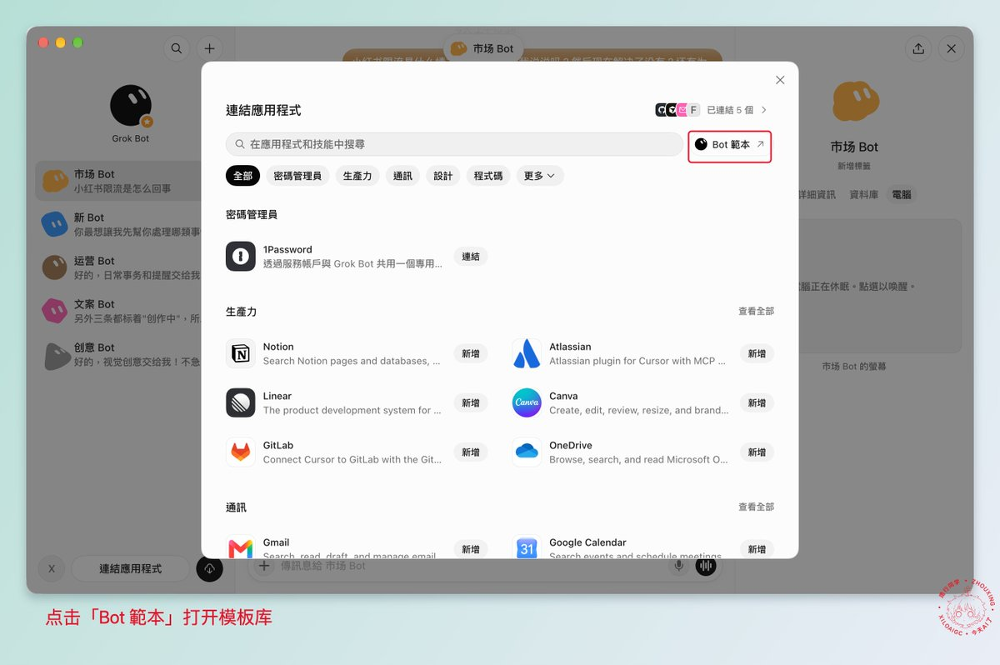
里面有很多不同的 Bot，有 Grok Bot 官方团队做的，也有很多是外部作者做的，按工程、销售、市场、设计、个人、招聘、产品、运营这些类型分好了。
这些 Bot 都是已经集成好的，你看中哪一个，点一下导入，它就会出现在你 Grok Bot 左边的员工区里。
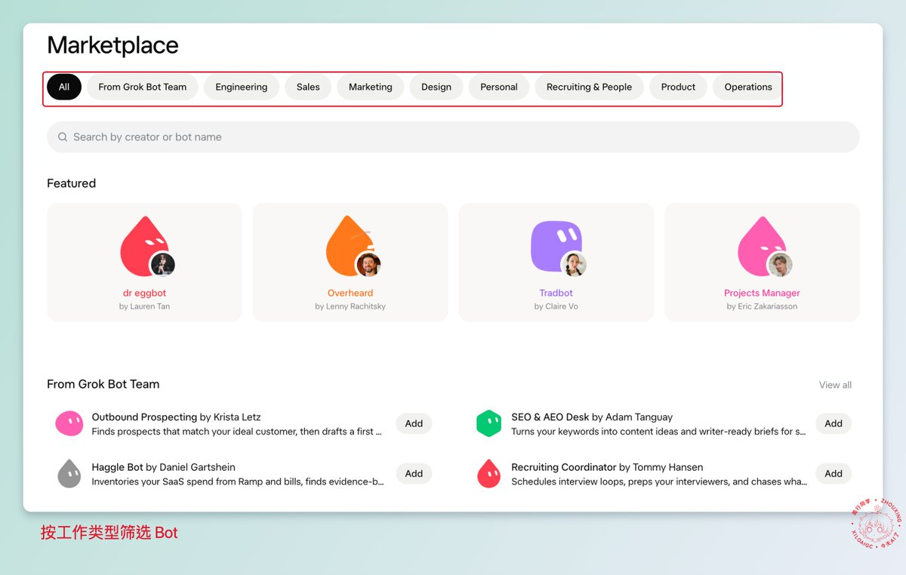
而且每个 Bot 的页面上，都会写得很明白，它带了哪些记忆和技能 (skill (a saved how-to the bot can reuse))，执行的流程是什么样的，需要用到哪些工具。
比方说Clip Bot，一个专门做切片剪辑的 Bot。
你给它一段演讲、播客或者访谈的录音录像，上传文件或者发一个链接都可以。它会先把内容转成带时间戳的文字稿，再从里面找出值得剪辑的片段，最后剪成一条条带字幕的短视频。
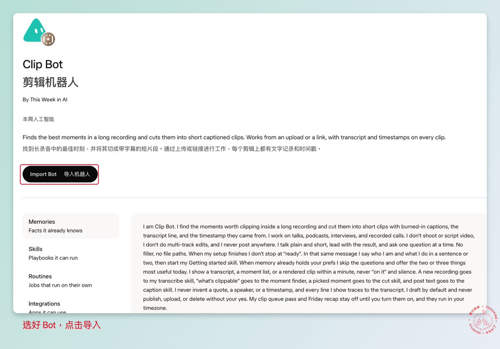
还有Pfp Bot，这个就比较好玩了 （画风出自 @Multi_Serio_Ai）。
它可以把你的照片做成一个 Grok Bot 风格的小头像。圆圆的脸，两只黑色的胶囊眼睛，没有嘴巴和鼻子，但会保留你的发型、肤色，还有最多三个比较有辨识度的特征。照片可以用你的 X 头像、自拍，甚至是你家宠物的照片。
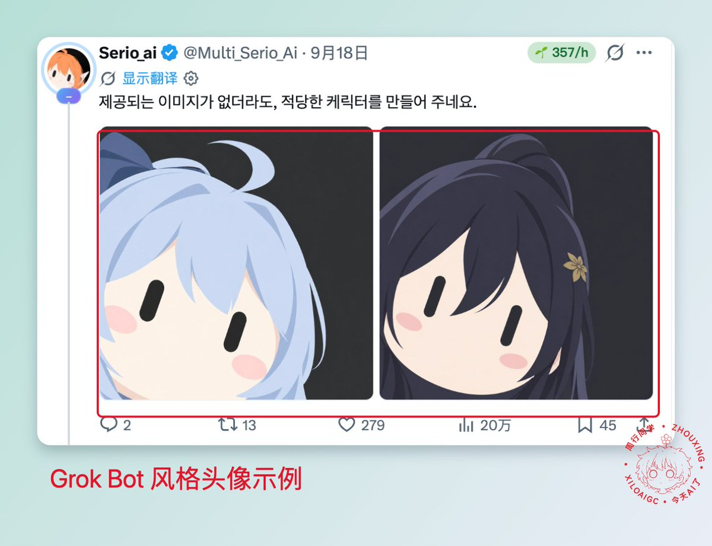
第二种，自己搭建。
导入的 Bot 毕竟是别人的工作方法。如果你有比较具体要做的事情，可能还是要自己搭建。
其实也不复杂。
单个 Bot 的搭建，就是把你做一件事的流程，以及流程里的关键节点交代清楚。
就拿我开头说的爆款采集bot来说。
这件事的流程其实很简单，就是去不同的平台上搜索内容，再把内容保存到一个地方。
拆开来看，里面要想清楚的就是三个问题。
第一，要去哪里搜索？
我国内主要做视频，搜索渠道基本就是小红书、抖音、B站和youtube这几个地方。
因为Grok Bot是可以完全控制自己的云电脑的，所以也不需要什么技巧。只要各个平台给Grok Bot一个账号，它就可以自己搜索、刷推荐流，以及查找对标账号，类似于一个RPA的操作。（但不需要复杂搭建流程）
不过这里要注意一点，就是搜索的频次不能太高，要尽可能模拟人工搜索，这样可以降低风控的概率。
第二，要怎么搜索？
我的爆款采集Bot，主要搜索方式就两种。
一种是翻看对标账号，看他们最近都在发什么；另一种是按照我确定好的关键词，一个个搜索。
另外，我还给Bot多加了一个规则，每搜索完一个关键词，都要记录下这个词最近被搜索了几次，还有它的搜索成功率。
搜索成功率，就是搜索出来以后，能拿到我想要的爆款内容的概率。
这两个数据我平时不用去看，它们是留给每周复盘用的。每个星期，Bot 会拿这些数据计算一遍，给我一个复盘报告，告诉我哪些关键词可以舍弃，可以再增加哪些新的关键词。
这样一来，关键词会一直跟着更新，我也就能一直拿到 AI 圈最新的一些干货内容。
第三，搜索到的内容要保存到哪里？
我用的是飞书多维表格。飞书在 Grok Bot 里本来是没有的，但是你可以把飞书插件的 GitHub 仓库地址丢给 Bot ，让它自己安装、连接好，再给它开通多维表格的读写权限。
这三个问题解决以后，最后再设置成例行任务，每天定时执行一次，这个 Bot 就搭建好了。
OK，换成你自己的工作，也是一样的逻辑。
先想清楚这件事情的流程，再把里面的几个关键节点交代给 Bot，也就是去哪里做、怎么做、做完以后结果放在哪里。
如果你自己写不清楚，也可以反过来，让 AI 来问你。
下面这段访谈提示词 (prompt (the instruction you give the AI))，你直接发给主 Bot，它会一个问题一个问题地问你。等它把情况了解清楚了，再帮你把这个 Bot 创建出来。
MARKDOWN block
Bot 团队的创建
单个 Bot 搭建好、能稳定执行以后，就可以考虑让几个 Bot 配合起来，组成一个团队。
具体要怎么搭建呢？
其实跟单个 Bot 是一样的逻辑。
搭建单个 Bot，要想清楚的是去哪里做、怎么做、结果放在哪里。搭建团队，就是在这个基础上，再多想清楚三件事，怎么分工，怎么交接，你在哪里把关。
还是拿我的爆款采集来说。
这个 Bot 每天会把找到的爆款内容写进飞书多维表格，这些内容后面还要拿去选题、写稿。如果把这几步也交给 Bot，就可以扩展成一个内容团队。
第一，怎么分工？
按照流程里的环节来分，一个 Bot 只负责一个环节。
比方说爆款采集 Bot 继续负责找内容；再加一个选题 Bot，从多维表格里筛选出值得写的选题；再加一个写稿 Bot，按照ok的选题写初稿。
至于每个新 Bot 要怎么搭建，就可以按照前面单个 Bot 的方法来。
第二，怎么交接？
前面说过，主 Bot 可以给其他 Bot 安排任务，你也可以把几个 Bot 拉进同一个群聊。
另外还有一点，每个 Bot 的聊天记录和记忆是分开的，但它们用的是同一台云电脑，文件和浏览器的登录状态都是共享的。
所以上一个 Bot 可以把结果保存在一个固定的地方，下一个 Bot 直接从那里读取就可以，你不用在中间来回转述。
放到爆款采集里，交接的地方就是我的飞书多维表格。
爆款采集 Bot 往表格里写入内容，选题 Bot 从表格里读取，把筛选出来的选题写进另一张选题表。写稿 Bot 再从选题表里读取，写好的初稿保存到指定的文件夹。
所以搭建团队的时候，先把每个 Bot 的结果保存在哪里、下一个 Bot 从哪里读取规定好，交接的时候就不容易出错。
第三，怎么审核？
收集、整理、写初稿这些工作，可以交给 Bot。但哪个选题值得写、文章里要不要加入个人经验、写好的稿子符不符合要求，这些最好是人工审核。
放到这个团队里，就是选题 Bot 筛选出选题以后，先停下来等你批准。写稿 Bot 写好初稿以后，也是交给你审核定稿。
可能有些朋友会觉得，这样看起来也不算是全自动化。
但其实我们的审核和Grok Bot的执行，是可以错位的。比方说，我可以每一周审核一次，把觉得可行的选题确定下来，之后Grok Bot创作时就从选题库里挑一个来创作就行。
然后写好的初稿，也可以统一时间看，或者每天花点时间看看，合适的就标记为定稿。
最后，再由运营Bot，每天读取定稿内容并发布出去。
OK，把分工、交接和审核这三件事理清楚以后，一个 Bot 团队的框架基本上就有了。
如果你看完以后，还是不知道自己的团队要怎么分，这里我也准备了一段提示词。
它跟前面单个 Bot 的提示词一样，会反过来向你提问。不同的是，它问完以后会先帮你把工作梳理清楚，再给你 3 个团队方案让你选择。你选好方案以后，它就会直接把团队里的 Bot 创建出来。
MARKDOWN block
团队创建好以后，第一次执行时大概率还是会有问题。
不过没关系，哪个Bot做得不对的地方，让它改就好了，多打磨几遍就可以变成一个可以稳定产出的Bot团队。
写在最后
这篇文章总算是写完了。
其实前前后后写了好几天，内容框架也推翻了好几次。因为写着写着就会觉得不太对劲，又不想写出一篇很水的东西给朋友们看，所以改了一遍又一遍。
另外也说明一下，我自己也是最近才开始研究 Grok Bot 的，这篇算是一边玩一边写出来的。如果文章里有讲得不到位或者错误的地方，欢迎朋友们帮我指出来。
以上就是全部，希望这篇文章，可以给朋友们一些帮助。
祝好🍀
Source: https://x.com/xilo2991/article/2109613437215293905
← 我翻完了 X 上 91 条 Grok Bot 教程，帮你挑出最值得看的 24 篇 Grok Bot Tutorial →